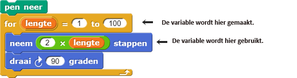

Programmeer een Raad-het-getalspel met Script-variabelen
In deze les, ga je twee verschillende variabelen gebruiken om informatie in op te slaan:
- Een script-variabele (een soort lokale variabele) die enkel binnen één script kan worden gebruikt.
- Een globale variabele die je kunt plaatsen, gebruiken of veranderen waar dan ook in je programma.
Op deze pagina, ga je een Raad-het-getalspel bouwen dat een script-variable gebruikt om een geheim getal te onthouden.
Gebruik een script-variable (een lokale variabele)
Je hebt variabelen als input aangemaakt voor je zelfgemaakte blokken:

Je hebt ook de variabele gebruikt die het voorblok je heeft gegeven:

Inputvariabelen en voorvariabelen behoren beide tot de lokale variabelen;
deze werken alleen binnen het script waarin ze aangemaakt zijn. Als je deze variabelen naar een ander script
zou slepen, zal het niet werken. Soms is het nodig om meer variabelen te maken die informatie
tijdelijk opslaan terwijl je script aan het runnen is. Het script-variabelenblok zorgt
daarvoor.
Stel je bijvoorbeeld een Raad-het-getalspel voor waarbij een speler het geheime getal van een computer probeert te raden. De computer moet dit geheime getal ergens opslaan zodat het dit kan vergelijken met het getal waarvan de speler denkt dat het het juiste is. Maar, op het moment dat het spel voorbij is, is het geheime getal niet meer nodig. Als je hetzelfde spel weer wilt spelen, heb je een nieuw geheim getal nodig.
Een variabele dat alleen aangeroepen of gebruikt kan worden in de omgeving waarin hij is aangemaakt. Dit
is de gebruikelijke term in de computerwetenschappen voor 'variabele' die omschreven worden als inputs
voor procedures, of (in Snap! en sommige andere programmeertalen) gemaakt door
voor of script-variabeken.
-
"H2L1-RaadHetGetal"
- Maak een nieuw command blok genaamd
Raad-het-getalspel. -
Maak in dit blok een script-variabele genaamd geheim getal (instructies hieronder), en
zet het op een willekeurig getal tussen 1 en 10.
Maak een Script-Variabele
- Plaats een
script-variabeleblok in je script gedeelte. Deze kun je vinden in je Variabele palet.

- Geef de variabele een naam door op de oranje a te klikken op het eind, en dan de naam die je wilt te typen. Hier, moet je het geheim getal noemen.
script variabelenblok te slepen, dezelfde manier als hoe je een input variabele naar binnen sleept, en plaats deze waar je het nodig hebt in je code. - Plaats een
- Gebruik
maakom de initiële waarde van je variabele in te stellen. Het kleine driehoekje naar beneden zorgt ervoor dat je de variabele kunt kiezen die je wilt. Schrijf een code die een geheim getal aanwijst aan een random getal tussen de 1 en 10.
De initiele waarde van een variabele aanmaken noemen we het initialiseren van de variabelen.
zet
blok wanneer je het in hetzelfde script hebt geschreven met het script-variabelen blok.
Check het getal van de speler
Wat je graag wilt, is dat de computer net zo lang blijft vragen om getallen te raden, totdat het geheime
getal is
geraden. Om dat te doen, ga je het herhaal tot blok gebruiken. Herhaal tot is een
herhaling (net als herhaal, altijd, en voor) die
iets
herhaalt totdat er een zekere conditie is voldaan. In dit geval, moet de code herhaalt
worden totdat de speler's antwoord gelijk staat aan het geheime getal.
Herhaal tot is een conditioneel blok (net als als). Conditionelen
maken
keuzes gebaseerd op een conditie in de vorm van een Boolean waarde (of
 of
of  ).
De conditie wordt gecheckt door een predikaat, een waar/niet-waar vraag zoals
).
De conditie wordt gecheckt door een predikaat, een waar/niet-waar vraag zoals  . Predikaten zijn
altijd
Boolean waardes. En deze passen binnen een hexogone inputs, zoals in
. Predikaten zijn
altijd
Boolean waardes. En deze passen binnen een hexogone inputs, zoals in  . Predikaten
ondersteunen conditionelen beslissen wanneer ze iets moeten doen.
. Predikaten
ondersteunen conditionelen beslissen wanneer ze iets moeten doen.
Een Boolean waarde is of Waar of Niet Waar. Het woord Boolean begint met een hoofdletter, omdat het vernoemd is naar een persoon, George Boole, die binnen de wiskunide de tak van Boolean functies heeft uitgevonden (zoals
en,
of,
en niet).- Gebruik
herhaal totom aan de speler tevragenhet geheime getal te raden totdat hetantwoordgelijk is aan het geheime getal. - Sleep het geheime getal variabele uit het
script-variabelenblok om het te gebruiken. - De
 and wait") en blokken gaan
goed samen. Als je
en blokken gaan
goed samen. Als je vraaggebruikt om een vraag te stellen, zal het antwoord van de speler weergegeven worden doorantwoord. - Zodra de speler het goede antwoord heeft geraden, zorg ervoor dat de computer de speler feliciteert.
- Test and debug. Speel om de beurt het spel, en fix alle problemen binnen de code die je tegenkomt voordat je verder gaat.
- Wanneer de computer de speler feliciteert omdat hij/zij het geheime getal goed heeft geraden, laat dan de computer het geheime getal nog eens zeggen. Bijvoorbeeld, het zou kunnen zeggen "Je hebt het geraden! Mijn geheime getal was '7'".
voeg om de tekst "Je hebt het geraden! Mijn geheime getal
was.." samen te voegen met de waarde van de geheime getal variabele.